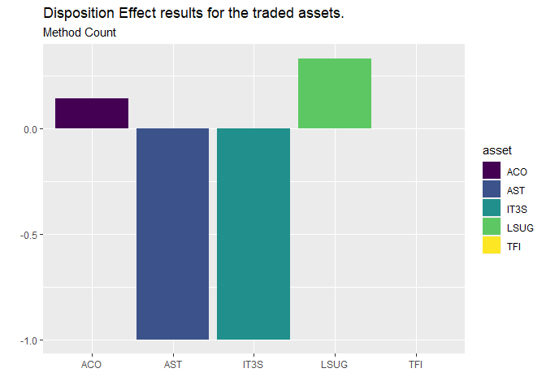

The dispositionEffect package allows to quickly evaluate the presence of disposition effect’s behaviours of an investor based solely on his transactions and the market prices of the traded assets.
Installation
By the moment, you can only install the development version from GitHub with:
install.packages("devtools")
devtools::install_github("marcozanotti/dispositionEffect")You will be able to install the released version of dispositionEffect from CRAN with:
install.packages("dispositionEffect")Overview
The package contains few user-friendly purpose specific interfaces:
portfolio_computeis a wrapper function that compute realized and paper gains and losses from the investor’s transactions and the market prices of the traded assets and updates the investor’s portfoliogains_lossesis the core function of the package. It performs all the necessary calculations and can be used for real-time processing (it is intended for advanced users only)disposition_effectcomputes the disposition effectdisposition_differencecomputes the disposition differencedisposition_computeinterfaces that allows to easily apply the two previous functions to results obtained fromportfolio_computedisposition_summaryinterfaces that allows to easily compute summary statistics of disposition effect from the results obtained withportfolio_computedisposition_compute_tstime series version ofdisposition_computeto obtain the time series of disposition effectdisposition_summary_tstime series version ofdisposition_summary_tsto compute summary statistics on time series disposition effect
Tutorials
Getting started
The Analysis of Disposition Effect
Disposition Effect in Parallel
Time Series Disposition Effect
Getting started
The following simple example shows how to perform disposition effect calculations on real financial market data.
Portfolio of transactions of a real investor.
head(investor)
#> investor type asset quantity price datetime
#> 1 ID123 B ACO 45 3.9 2018-04-09 11:17:30
#> 2 ID123 B LSUG 450 2.1 2018-05-17 15:06:53
#> 3 ID123 S ACO 45 4.2 2018-05-22 17:11:09
#> 4 ID123 B IT3S 230 1.1 2018-05-28 14:30:46
#> 5 ID123 S IT3S 230 1.0 2018-06-01 15:27:02
#> 6 ID123 B LSUG 90 2.5 2018-06-01 15:43:51Dataset of market prices of the traded assets.
head(marketprices)
#> asset datetime price
#> 1 ACO 2018-04-09 11:17:30 3.94
#> 2 AST 2018-04-09 11:17:30 2.20
#> 3 IT3S 2018-04-09 11:17:30 1.02
#> 4 LSUG 2018-04-09 11:17:30 2.25
#> 5 TFI 2018-04-09 11:17:30 0.41
#> 6 ACO 2018-05-17 15:06:53 4.56Compute realized gains, realized losses, paper gains and paper losses.
portfolio_results <- portfolio_compute(
portfolio_transactions = investor,
market_prices = marketprices
)Compute the disposition effect with different methods.
de <- disposition_compute(portfolio_results)
de
#> investor asset DE_count DE_total DD_value DD_duration
#> 1 ID123 ACO 0.14 0.041 0.0087 440
#> 2 ID123 AST -1.00 -1.000 -0.0750 -165
#> 3 ID123 IT3S -1.00 -1.000 -0.0310 -57
#> 4 ID123 LSUG 0.33 0.355 0.0106 1412
#> 5 ID123 TFI 0.00 0.000 0.0000 0Summarise the behaviour of the investor.
disposition_summary(portfolio_results)
#> $de
#> investor asset DE_count DE_total DD_value DD_duration
#> 1 ID123 ACO 0.14 0.041 0.0087 440
#> 2 ID123 AST -1.00 -1.000 -0.0750 -165
#> 3 ID123 IT3S -1.00 -1.000 -0.0310 -57
#> 4 ID123 LSUG 0.33 0.355 0.0106 1412
#> 5 ID123 TFI 0.00 0.000 0.0000 0
#>
#> $stat
#> investor stat DE_count DE_total DD_value DD_duration
#> 1 ID123 Q1 -1.00 -1.000 -0.0310 -57
#> 2 ID123 Median 0.00 0.000 0.0000 0
#> 3 ID123 Q3 0.14 0.041 0.0087 440
#> 4 ID123 Mean -0.30 -0.321 -0.0173 326
#> 5 ID123 StDev 0.65 0.635 0.0363 649
#> 6 ID123 Min -1.00 -1.000 -0.0750 -165
#> 7 ID123 Max 0.33 0.355 0.0106 1412Plot the results to spot the presence of the disposition effect.
library(ggplot2)
ggplot(de, aes(x = asset, y = DE_count, fill = asset)) +
geom_col() +
scale_fill_viridis_d() +
labs(
title = "Disposition Effect results for the traded assets.",
subtitle = "Method Count",
x = "", y = ""
)
Since financial data may be potentially huge in size, efficiency concerns are solved through the parallel versions of the main functions.
portfolio_results_parallel <- portfolio_compute_parallel(
portfolio_transactions = investors,
market_prices = marketprices,
allow_short = TRUE
)Getting help
If you encounter a clear bug, please file an issue with a minimal reproducible example on GitHub.
For questions and other discussion, mail us at zanottimarco17@gmail.com.
Acknowledgements
A special thank to Claud Graphics for our logo.
Please note that this package is free and open source software, licensed under MIT.